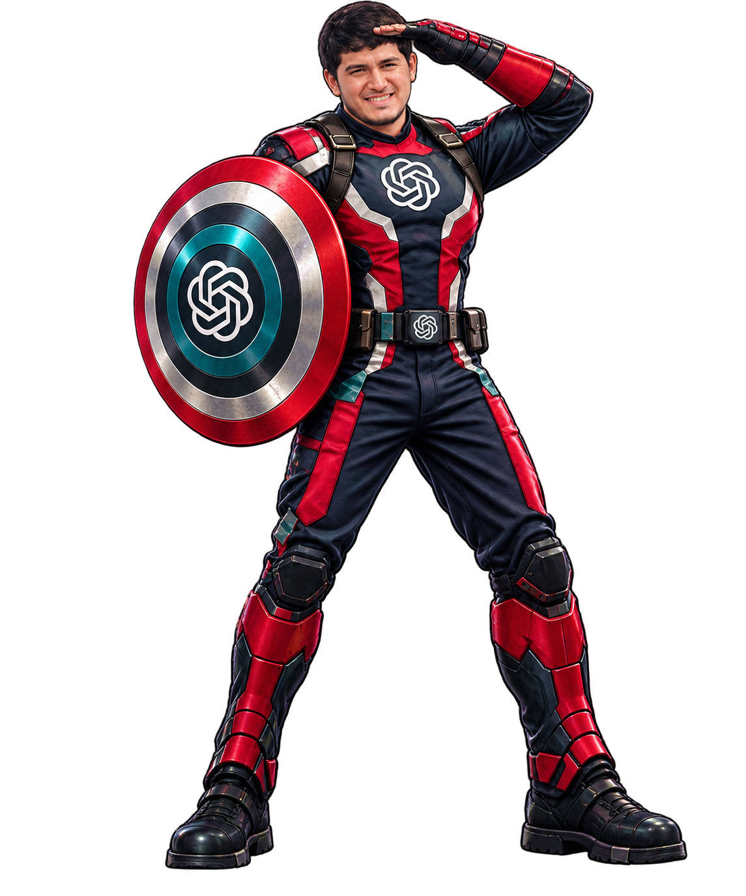

CAPITAN CHAT GPT
Héroe que se creía muerto luego de ser descubierto copiando el examen, pero gracias a los viajes en el tiempo ese "error fue corregido".
Debido a interferir en el perpetuo ciclo de la FIS, debió ser reubicado a otra facultad, a Civil.
Pero debido a una gran amenaza deberá volver a usar a su fiel amigo, la IA.